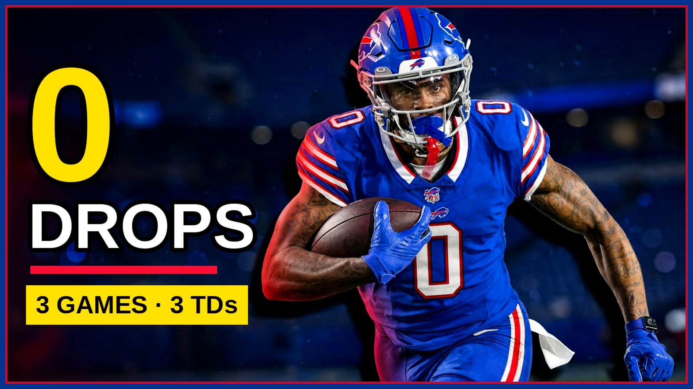

Keon Coleman's stat line is lying to you (in a good way)
19 catches, zero drops, a 138.0 passer rating when targeted. Keon Coleman's breakout is quieter than the highlights — and more real. Dre shows you why the boring numbers are the story.

If you only watch highlights, Keon Coleman's season looks like a rumor — a catch here, a touchdown there, long stretches where the broadcast forgets him. Then you open the actual numbers and the story flips: 19 catches, 283 yards, 3 touchdowns, and the two figures that should end the argument about whether he's arrived. Zero drops. And a 138.0 passer rating when Josh Allen throws his way.
Let's sit with the zero for a second. Drops were the cloud over Coleman's early career — the plays that reached his hands and didn't stay there, the drives that died on contact. This season: 19 catches on a 79.2 percent catch rate, and not one drop. That isn't luck. That's a receiver whose hands have caught up to his frame, securing the ball through contact instead of fighting it. The most important development in a young receiver's game is never the spectacular play. It's the ordinary play becoming automatic.
283 yards on 19 catches works out to nearly 15 yards a reception, which tells you how Buffalo is using him: not as a volume target, but as a strike weapon. Coleman isn't catching five-yard hitches to move the chains. He's winning downfield, at the catch point, in the areas where a 50-50 ball becomes a 70-30 ball because of his size and timing. Three touchdowns, in three straight games at one stretch, is what that usage looks like when it cashes.
The 138.0 rating when targeted deserves context too. That number measures what happens when Allen decides Coleman is the answer on a given play — completions, yards, touchdowns, and the absence of interceptions. A rating that high means Allen's trust isn't charity. The quarterback who can throw to anybody is choosing Coleman in real moments, and the results keep justifying it.
On film, you can see why. Coleman has become precise in the places young receivers are usually sloppy: stemming his routes to hold a defender's leverage, sitting down in the zone void instead of drifting into coverage, and — this is the quiet one — blocking with genuine intent in the run game. In an offense where James Cook averages 5.34 yards a carry, a receiver who blocks like he means it isn't a bonus. He's part of the machinery.
So why does the breakout feel quiet? Because Buffalo's offense spreads the ball by design, and because Coleman doesn't chase the spotlight the way the position's divas do. The stat line isn't lying about his talent. It's lying about his role — making a foundational piece look like a role player, one efficient Sunday at a time.
With DJ Moore working back and the Ravens' secondary on deck, Coleman's next step is volume when the defense tilts away from him. The efficiency is already there. When the targets climb to match it, the highlights will finally catch up to the numbers.
The BNC Blitz is free: the day's Bills news, one stat that matters, and one take, every morning. Join to keep reading — and never miss the end of a story again.